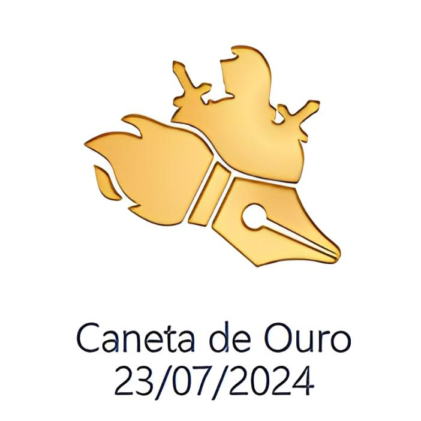
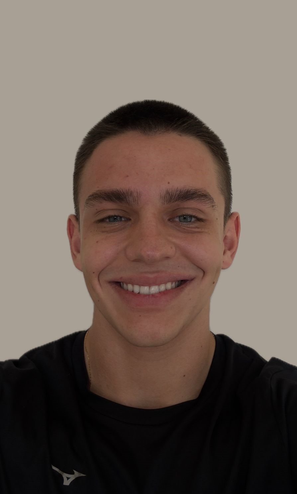

Experiencia extracurricular
Ordem DeMolay - Cargo de escrivão2024/1
Atuei como escrivão no Capítulo União Fraterna de Tupã - nº649 e fui reconhecido nacionalmente pela campanha "Caneta de Ouro" por excelência na realização do cargo.


Discente em Engenharia de Sfotware da UTFPR de Cornélio Procópio, atualmente no segundo período.

Graduação em Engenharia de Software
(em andamento)
2025/1 - 2028/2 (previsão)
- Crossfit
- Tecnologia
- Relógios
- Carros esportivos
Atuei como escrivão no Capítulo União Fraterna de Tupã - nº649 e fui reconhecido nacionalmente pela campanha "Caneta de Ouro" por excelência na realização do cargo.
